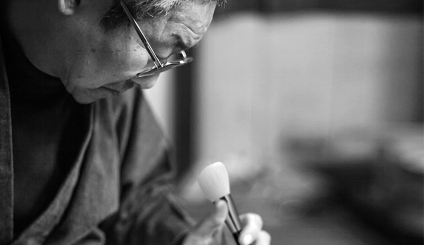

-
沁颜堂>来自日本的传统工艺品“熊野笔”
-
位于日本广岛安芸郡熊野町，是个有170年历史的笔乡，自1830年江户时代开始，
就以精湛的毛笔制作技术文明全日本。现今以传统的手工技艺制作出非常有名的化妆刷，
如日本殿堂级品牌竹宝堂，白凤堂，竹田三大化妆刷品牌都诞生在这里，熊野成立了化妆刷协会，
联合起来保护他们的品牌。2004年，熊野町内生产的毛笔、画笔和化妆笔均取得“熊野笔”这个
团体商标，商品被称为“熊野笔”。“熊野笔”对于日本人来说不止是一种工具，更是一种精神。
-
沁颜堂>熊野传统工艺师制造
-
沁颜堂由日本3位得到国家指定的传统工艺师导入制造毛笔的技术制作。
笔刷的天然毛尖不通过机器切断，而是采用手工艺人一根一根做出，除此之外，
沁颜堂对于毛的选拔和混毛工作也极其谨慎，全采用手工方式将原毛中混入的杂物、
绵毛等剔除，再将开叉的、逆毛等拔出，这便促使沁颜堂天然的毛尖在刷脸过程中完
全不刺激肌肤,上妆时抓粉性更强。沁颜堂每一支笔刷都包含了每一位匠人的心血。